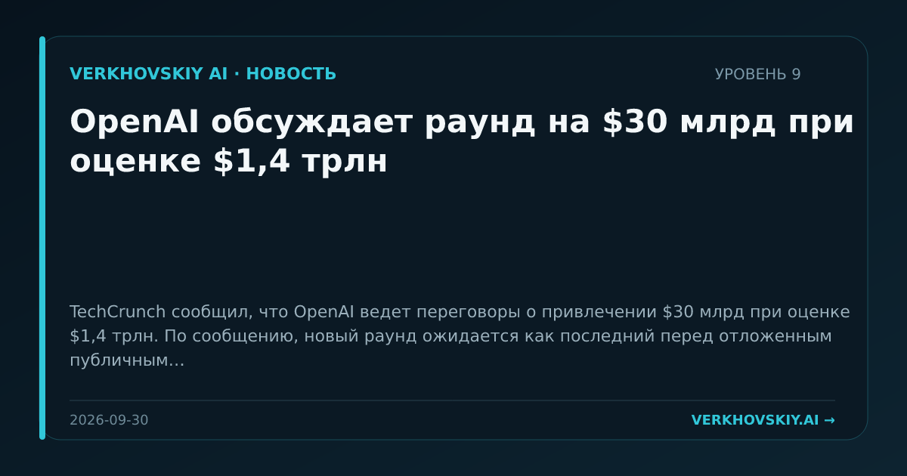

OpenAI обсуждает раунд на $30 млрд при оценке $1,4 трлн
TechCrunch сообщил, что OpenAI ведет переговоры о привлечении $30 млрд при оценке $1,4 трлн. По сообщению, новый раунд ожидается как последний перед отложенным публичным размещением в 2027 году. Почему это важно: Капитализация закрытой модельной компании начинает выполнять функцию инфраструктурного финансирования. Это усиливает разрыв между игроками, способными покупать вычисления заранее, и остальным рынком.